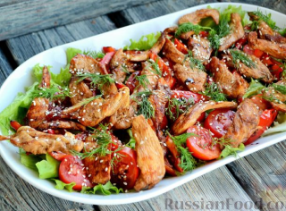

Назад
Тёплый салат с курицей, сладким перцем и помидорами

35 мин

6 порций

35 мин
6 порций
Ингридиенты:
Филе куриное - 400 г
Перец болгарский - 1 шт.
Помидоры - 300 г
Листья салата - 1 пучок
Кунжут - 1 ст. ложка
Соус соевый - 50 мл
Масло оливковое - 3 ст. ложки
Уксус бальзамический - 1 ст. ложка
Укроп свежий - 2-3 веточки
Соль - 1/3 ч. ложки
Перец чёрный молотый - на кончике ножа
Пошаговый рецепт
- Подготовьте продукты по списку.
- Острым ножом нарежьте куриное филе тонкими пластинками толщиной примерно 5-7 мм.
- Выложите куриное филе в миску. Добавьте соль, чёрный перец и соевый соус. Перемешайте. Оставьте куриное мясо мариноваться на 10-20 минут.
- Обжарьте замаринованное куриное филе на оливковом масле до румяности с одной стороны, примерно 5-7 минут.
- Затем переверните кусочки куриного мяса и продолжайте жарить ещё 5 минут.
- Пока обжаривается куриное филе, сладкий перец нарежьте небольшими кусочками произвольной формы.
- На оставшемся после обжарки филе масле слегка обжарьте сладкий перец в течение 3 минут, постоянно помешивая.
- Листья салата вымойте, обсушите, порвите руками на крупные кусочки и выложите на тарелку для подачи.
- Помидоры нарежьте небольшими дольками.
- Сверху выложите кусочки печёного перца. Поверх овощей разложите ещё тёплые кусочки куриного мяса.
- Украсьте салат зеленью укропа и полейте бальзамическим уксусом.
- Посыпьте тёплый салат с курицей, печёным болгарским перцем и помидорами кунжутом.